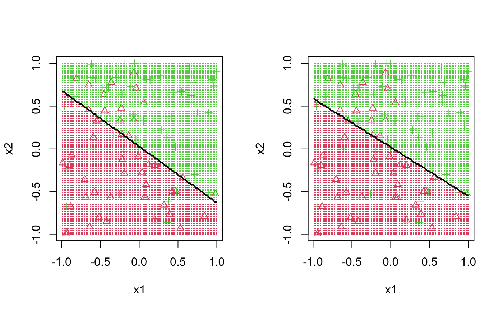

decision_boundary.RdPlot decision boundary for a classifier with 2 predictors
decision_boundary( fitted_model, y, x1, x2, predict_type = NULL, predict_fun = NULL, resolution = 100, showgrid = TRUE, ... )
| fitted_model | a fitted classifier object, for example the result of |
|---|---|
| y | the original observed classes |
| x1 | original first predictor |
| x2 | original second predictor |
| predict_type | default is |
| predict_fun | if your classifier is different than one of the standard methods (see below) you can pass a custom function which accepts a single argument g (a new data dataframe with columns) and produces a vector of classes |
| resolution | number of points along the two dimensions to produce classes |
| showgrid | do we plot a grid of predictions |
| ... | additional arguments passed to |
If assigned to an object, returns the matrix of predicted classes
This function should work with only the mandatory arguments if the
classifier is produced via glm(), MASS::lda(), MASS::qda() or from either
multinom() or nnet() in the {nnet} package. Other classifiers likely
require additional instructions. If the predict method produces integer
or factor labels as output, it should just "work".
x1 = runif(100,-1,1) x2 = runif(100,-1,1) y = rbinom(100, 1, 1/(1+exp(-2*x1-3*x2))) logit = glm(y~x1+x2, family="binomial") disc = MASS::lda(y~x1+x2) par(mfrow=c(1,2)) decision_boundary(logit, y, x1, x2) decision_boundary(disc, y, x1, x2)